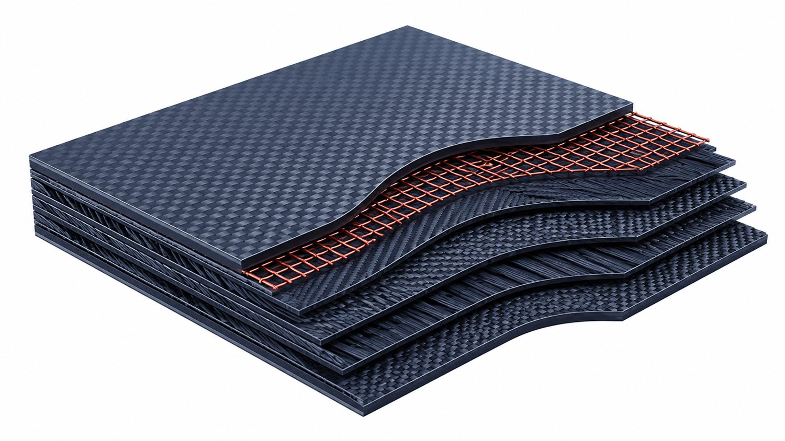
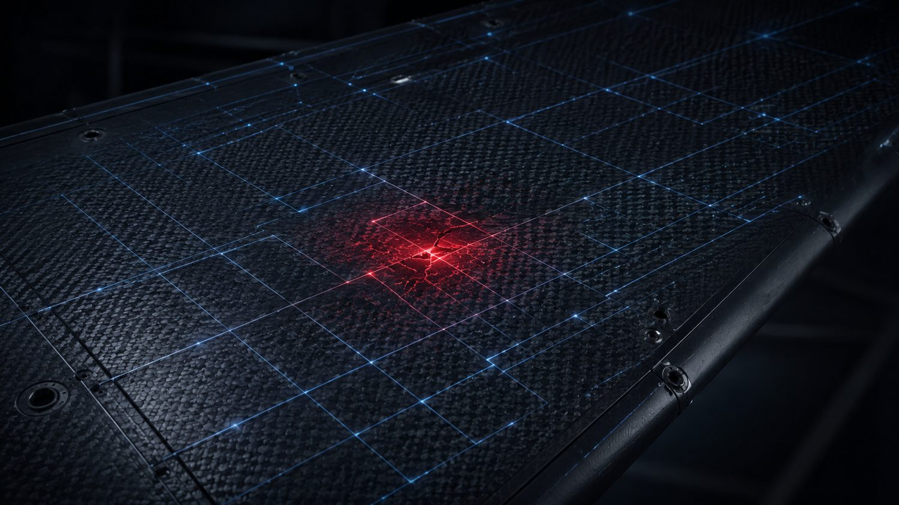

Beyond Lightning Strike Protection: The Multifunctional Conductive Layer That AFP Can Place
In our summary of the Bigand et al. study on painted carbon-fibre skins, we stopped where good reporting should: at what the data showed. On an identical laminate with an identical protection scheme, the paint on top drove internal delamination from essentially zero on a bare panel to 411.6 cm² on a thickly painted one. The damage is a surface-confinement effect, decided in the first few plies, and a bottom-view ultrasonic scan can miss it.
That leaves an obvious follow-on question, and it is the one worth answering out loud: if the outcome is decided at the top of the stack, what would a conductive layer built to own that region look like — and what does it need from the manufacturing process to be real? The short answer is a layer that is placed, not bolted on. And once you are placing it precisely, it stops being only a lightning shield. The same finely controlled conductive architecture can become a damage sensor, a de-icing heater, and a digital record of itself.
What follows is Addcomposites' own engineering position. The Bigand et al. numbers are theirs; the design argument is ours; and the work we lean on below is other groups' published results, cited so you can check them.
The Established Toolkit, and Its Ceiling
Lightning protection for composite aircraft is not a new field, and the conventional toolkit is mature. Metal options dominate: expanded copper or aluminium foil, woven wire mesh, metallized fibres, fabrics and veils, and conductive surface films, most often applied as a surfacing layer and qualified against the aerospace lightning-environment standards — the SAE ARP5412 waveform set, ARP5414 zoning (Zones 1A, 1B, 2A and so on), and ARP5416 / EUROCAE ED-105 test methods that back the certification requirements of FAR Parts 23, 25 and 27.
The ceiling in that toolkit is not the material; it is the integration. A protection layer that is chosen last and bonded on after cure is designed in a separate world from the plies it protects. The Bigand et al. result is a clean demonstration of why that separation matters: the same protected laminate behaves completely differently depending on what sits on top of it. If the surface system and the structural plies interact that strongly, they should be designed — and built — together.
Correct the Framing: It's Placement, Not a Coating
The alternative to a bolt-on surfacer is to treat the conductive layer as an integral layer placed within the layup and cured with the structure, in the same resin at the same cycle. There is no separate film-adhesive interface to fail, and no thermoplastic assumption baked in: it is co-cured into the skin exactly like any other ply, at the same temperature as the surrounding resin, so the protected region is as strong as the structure itself. The whole game becomes placement with sufficient connectivity and a high-quality resin, rather than a coating chosen at the end.
This is not speculative. Metal-and-carbon hybrid laminates have been built and characterised on a robotic fibre-placement cell,4 and dual-layer conductive/insulating LSP stacks have been designed and tested.6 Our AFP-XS is capable of placing that conductive layer as part of the same automated sequence that lays the structural plies — orienting it where you want it and, crucially, setting its connectivity region by region.

Conceptual render: the conductive layer (copper grid) placed within the laminate and co-cured with the carbon plies, rather than bonded on after cure. Illustration, not a photograph.
Two ways to add the layer
Bolt-on surfacer vs AFP-placed & co-cured
The painted-panel result argues against a shield designed and built in a separate world from the plies it protects. Co-curing the conductive layer into the same resin removes the one interface that a bonded surfacer adds. Addcomposites analysis.
Schematic; Addcomposites analysis.
The Design Freedom People Miss: Tune the Conductivity Spatially
A placed conductive layer is not one uniform sheet. With AFP you decide, locally, how much conductor is present and how it is connected — by varying the gaps between courses, the overlaps, and the number of layers. That turns conductivity into a designed field across the part: high-conductivity zones that act as charge sinks where a strike is likely to attach, taking the impact, and thinner, more linear paths that steer the current away elsewhere.
Recent work has shown that tailoring the through-thickness conductive architecture directly changes the lightning-strike damage response,5 and automated-placement routes for laying overlapping conductive courses are established prior art. This is a design-architecture problem — precisely the kind of high-dimensional layout that modern AI-assisted design tools are well suited to optimise for a given part, load case and strike zone.
Designed conductivity · Sheet resistance · ARP5414 zoning
Tune the conductive layer's sheet resistance across the skin
A lightning-strike-protection layer is defined by its sheet resistance (ohms-per-square, Ω/□) — lower means more conductive. AFP sets that value locally, through ply count, course overlap and programmed gaps, so the layer is most conductive where strikes attach (SAE ARP5414 Zone 1) and carries the current cleanly to the airframe bonding points. Addcomposites analysis.
Schematic; zone terminology per SAE ARP5414. Sheet-resistance values illustrative, not measured. Addcomposites analysis.
The transferable idea is not a specific material. It is that conductivity should be a designed variable, placed deliberately, not a uniform property you inherit from whatever mesh you bonded on. AFP is the process that makes “design the conductivity” a real, repeatable instruction rather than a wish.
Once It's Placed, the Same Layer Does Three More Jobs
Here is the part that turns a protection cost into a system advantage. A conductive layer placed to a known, repeatable geometry is not only a shield; it is a structure you can energise, read, and trace. Three uses follow almost for free.
The multifunctional layer
One placement, four functions
A single conductive layer, placed by AFP and co-cured into the skin, does four jobs at once. Select a function to see where it acts in the laminate. Each is grounded in published work; Addcomposites analysis.
Protect — lightning strike
Tuned low sheet-resistance in the strike zones lets current spread through the layer and exit to the airframe bonding points, instead of forcing it through the carbon plies.
Kumar 2023 · Zhu 2022Sense — health monitoring
Impact or delamination changes the grid's electrical resistance. Because the grid geometry is known and repeatable, the resistance shift locates and sizes the damage.
Ji 2025 · Zehni 2026De-ice / heat
Driving current through the same layer produces resistive (Joule) heating — for de-icing in service, and, with thermoplastics, as a heat source for in-service maintenance.
Latko-Durałek 2026Report — digital thread
AFP records every course, overlap and programmed gap. That as-built map verifies the conductive architecture and baselines the sensing grid for later inspection.
AFP as-built data · AddPathSchematic; Addcomposites analysis. Citations are third-party demonstrations of each function, not endorsements.
1. It becomes the sensor
A conductive grid placed to a known geometry is a calibrated grid — and one whose electrical (and electromagnetic) signature shifts when the structure underneath is damaged. Because you know exactly where every line sits, you can infer damage location and severity from how that signature changes. This is now demonstrated territory: real-time self-sensing structural health monitoring has been shown in AFP-manufactured parts,1 and a purpose-designed conductive-veil grid has been used as both a structural interlayer and a multi-point damage sensor in CFRP and GFRP.2 Turning the lightning shield into the sensing grid is exactly the direction we are pursuing in the final phase of the EU TOSCA project.

Conceptual render: the same placed grid read as a sensor — a local resistance change at the damaged cell (red) locates and sizes the impact. Illustration, not measured data.
2. It becomes the heater
The same integrated conductive interlayer can carry current to produce heat — for de-icing in service, and, as airframes move toward thermoplastics, as a resistive heating element that could support in-service maintenance and repair. Metallized thermoplastic nonwovens have already been integrated into fibre-reinforced composites and shown to work as both electrothermal heating elements and sensing layers in one part.3 One placed layer, several functions, and the weight is paid only once.
Conceptual render: driving current through the same conductive layer produces Joule heating for de-icing. Illustration.
3. It leaves a digital thread
Every course, gap and overlap AFP lays down is recorded. That as-built map is what lets you verify the conductive architecture came out as designed, interpret the sensing grid against a known baseline, and define the post-strike inspection envelope with the paper's NDT-under-read finding already accounted for. Design, protection, sensing, heating and inspection close into one loop, anchored by the placement record from AddPath.
Why This Matters Now
As eVTOL fleets scale from hundreds toward tens of thousands of aircraft, the aggregate rate of lightning strikes across the fleet rises. Conceptual render.
A lightning strike used to be a once-in-a-blue-moon event for a given airframe. That is changing for a simple reason: there is going to be far more flying. eVTOL fleets alone are projected to scale from hundreds of aircraft today toward the order of a hundred thousand over the coming decades, and every one of them — plus space reflectors, launch vehicles and space engines — has to survive strikes and carry as little dead weight as possible. When the fleet is that large, a layer that protects, senses and heats for the weight of one is not a nicety; it is how the numbers close.
What We Are Not Claiming
- This is a design proposition, not a finished test result. We are not quoting a delamination-reduction number, because the point is the architecture, not a figure we have not yet earned on a test bench.
- Lightning qualification is standards-bound. A concept laminate still has to earn its zoning under ARP5414, its waveforms under ARP5412, and its direct- and indirect-effects results under ARP5416 / EUROCAE ED-105 before any airframe claim is made. A design starts that process; it does not replace it.
- The papers we cite are other groups' work, and the Part-1 study's authors address neither manufacturing nor Addcomposites. The synthesis, and any error in it, is ours.
Where This Lands
The paint study proved the outcome is decided at the top of the stack. That is not a coating problem to hand downstream; it is a placement problem — orient the fibre, tune the connectivity, co-cure it in. Do that, and the conductive layer you added for lightning quietly becomes the sensing grid, the de-icing element, and its own digital twin. The literature is already converging on each of these pieces separately; the contribution we are proposing is to put them under one placed, controllable layer.
Talk to the Addcomposites team about building multifunctional conductive layers into CFRP and thermoplastic skins with repeatable, ply-by-ply AFP control — for lightning protection, structural health monitoring, de-icing, and the digital thread that ties them together. →
Get in Touch with AddcompositesReferences
- Y. Ji, C. Luan, X. Yao, Z. Ding, C. Niu, N. Dong, L. Cheng, K. Zhao, J. Fu, “Real-time in-service structural health monitoring method based on self-sensing of CF/PEEK prepreg in automated fibre placement (AFP) manufactured parts,” Composites Part A 2025, 194, 108925. doi.org/10.1016/j.compositesa.2025.108925
- O. C. Zehni, A. Kandemir, “Multifunctional carbon-veil grid design for impact damage monitoring and tolerance in GFRP and CFRP laminates,” Materials & Design 2026, 263, 115608. doi.org/10.1016/j.matdes.2026.115608
- P. Latko-Durałek, M. Misiak, D. T. Ufaysa, N. Tao, B. Przybyszewski, P. Durałek, D. Rutkowska, M. Kurkowska, A. Anisimov, O. Bergsma, R. M. Groves, A. Boczkowska, “Metallized thermoplastic nonwovens as integrated heating elements in fibre-reinforced composites,” Materials Today Communications 2026, 53, 115313. doi.org/10.1016/j.mtcomm.2026.115313
- M. M. A. Ammar, B. Shirinzadeh, P. Zhao, Y. Shi, “An approach for damage initiation and propagation in metal and carbon fibre hybrid composites manufactured by robotic fibre placement,” Composite Structures 2021, 268, 113976. doi.org/10.1016/j.compstruct.2021.113976
- V. Kumar, W. Lin, Y. Wang, R. Spencer, S. Saha, C. Park, et al., “Enhanced through-thickness electrical conductivity and lightning strike damage response of interleaved vertically aligned short carbon fibre composites,” Composites Part B 2023, 253, 110535. doi.org/10.1016/j.compositesb.2023.110535
- H. Zhu, K. Fu, H. Liu, B. Yang, Y. Chen, C. Kuang, Y. Li, “Design a dual-layer lightning strike protection for carbon fibre reinforced composites,” Composites Part B 2022, 247, 110330. doi.org/10.1016/j.compositesb.2022.110330
Background on the strike mechanism itself is in Part 1 (our summary of Bigand et al., Aerospace 2025, 12, 446). This post is an independent analysis by Addcomposites; the cited authors do not endorse it.